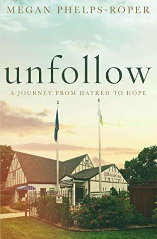
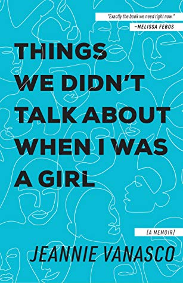
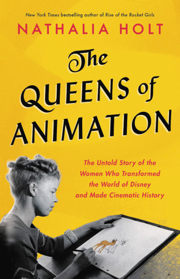
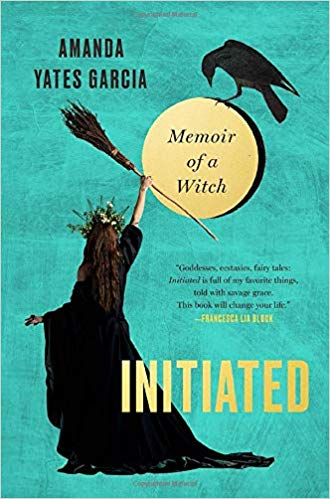

How We Fight For Our Lives
by Saeed Jones
by Saeed Jones
 As featured on the BBC documentary, 'The Most Hated Family in America' it was an upbringing in many ways normal. A loving home, shared with squabbling siblings, overseen by devoted parents. Yet in other ways it was the precise opposite: a revolving door of TV camera crews and documentary makers, a world of extreme discipline, of siblings vanishing in the night.
Unfollow: A Journey from Hatred to Hope
by Megan Phelps-Roper
by Megan Phelps-Roper
 Jeannie Vanasco has had the same nightmare since she was a teenager. She startles awake, saying his name. It is always about him: one of her closest high school friends, a boy named Mark. A boy who raped her.
Things We Didn't Talk About When I Was a Girl: A Memoir
by Jeannie Vanasco
by Jeannie Vanasco
 In The Queens of Animation, bestselling author Nathalia Holt recounts the dramatic stories of an incredibly influential group of women who have slipped under the radar for decades but have touched all our lives. These women infiltrated the all-male domain of Disney Studios and used early technologies to create the rich artwork and iconic storylines that would reach millions of viewers across generations. Over the decades–while battling sexism, domestic abuse, and workplace harassment–these women also fought to influence the way female characters are depicted to young audiences.
The Queens of Animation
by Nathalia Holt
by Nathalia Holt
From Pulitzer Prize-winning author Edmund Morris comes a revelatory new biography of Thomas Alva Edison, the most prolific genius in American history.
Edison
by Edmund Morris
by Edmund Morris
 An initiation signals a beginning: a door opens and you step through. Traditional Wiccan initiates are usually brought into the craft through a ceremony with a High Priestess. But even though Amanda Yates Garcia's mother, a practicing witch herself, initiated her into the earth-centered practice of witchcraft when she was 13 years old, Amanda's real life as a witch only began when she underwent a series of spontaneous initiations of her own.
Initiated: Memoir of a WitchPumpkinheads
by Amanda Yates Garcia
by Amanda Yates Garcia
 Tara Westover was 17 the first time she set foot in a classroom. Born to survivalists in the mountains of Idaho, she prepared for the end of the world by stockpiling home-canned peaches and sleeping with her "head-for-the-hills bag". In the summer she stewed herbs for her mother, a midwife and healer, and in the winter she salvaged in her father's junkyard.
Tara Westover was 17 the first time she set foot in a classroom. Born to survivalists in the mountains of Idaho, she prepared for the end of the world by stockpiling home-canned peaches and sleeping with her "head-for-the-hills bag". In the summer she stewed herbs for her mother, a midwife and healer, and in the winter she salvaged in her father's junkyard.
Educated
by Tara Westover
by Tara Westover
Dr Amanda Brown has treated inmates in the UK’s most infamous prisons – first in young offenders’ institutions, then at the notorious Wormwood Scrubs and finally at Europe’s largest women-only prison in Europe, Bronzefield. From miraculous pregnancies to dirty protests, and from violent attacks on prisoners to heartbreaking acts of self-harm, she has witnessed it all. In this memoir, Amanda reveals the stories, the patients and the cases that have shaped a career helping those most of us would rather forget.
The Prison Doctor
by Amanda Brown
by Amanda Brown
 In Amy Poehler’s highly anticipated first book, Yes Please, she offers up a big juicy stew of personal stories, funny bits on sex and love and friendship and parenthood and real life advice (some useful, some not so much), like when to be funny and when to be serious. Powered by Amy’s charming and hilarious, biting yet wise voice, Yes Please is a book full of words to live by.
In Amy Poehler’s highly anticipated first book, Yes Please, she offers up a big juicy stew of personal stories, funny bits on sex and love and friendship and parenthood and real life advice (some useful, some not so much), like when to be funny and when to be serious. Powered by Amy’s charming and hilarious, biting yet wise voice, Yes Please is a book full of words to live by.
Yes Please
by Amy Poehler
by Amy Poehler